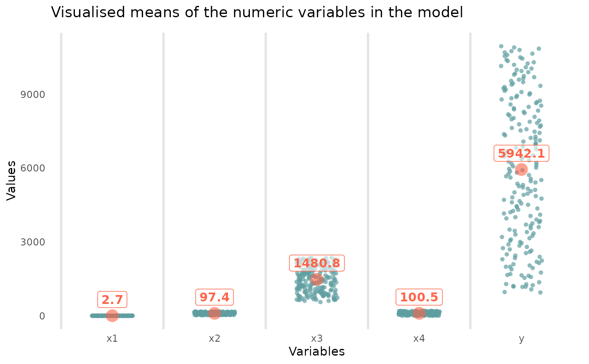
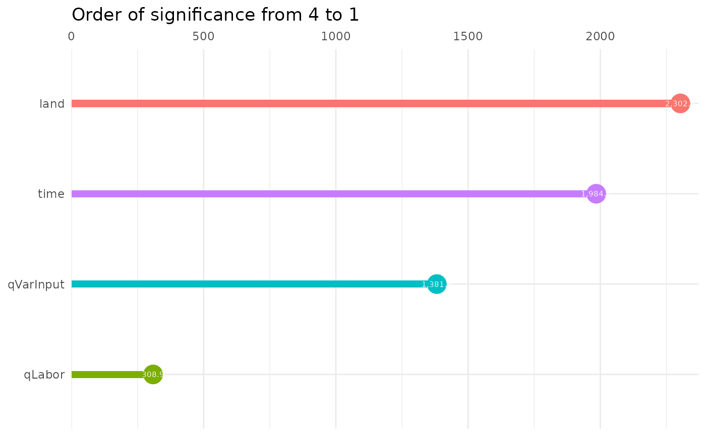
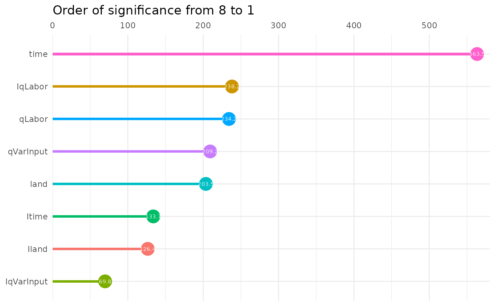
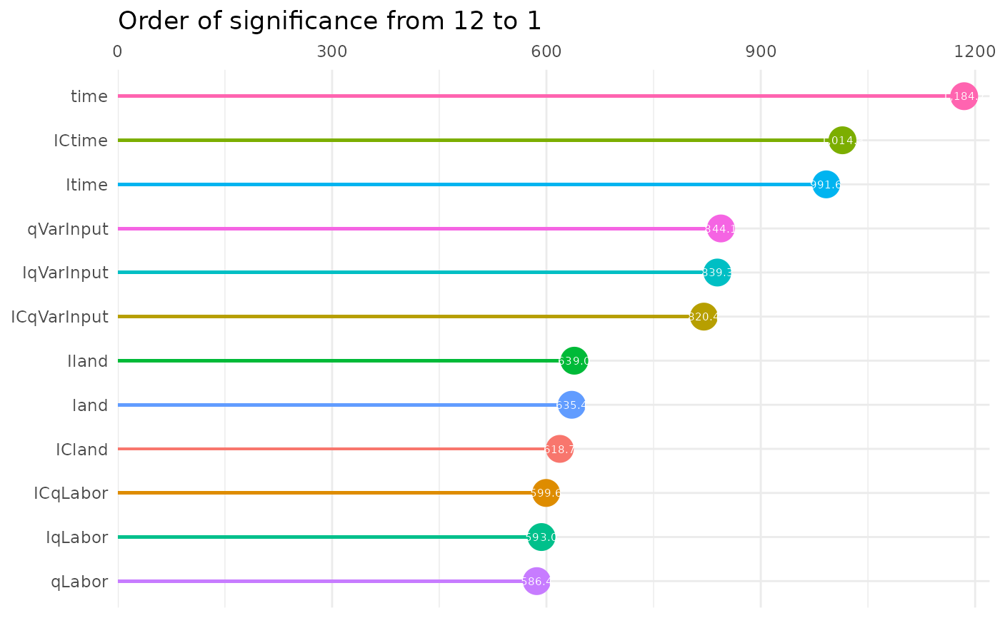
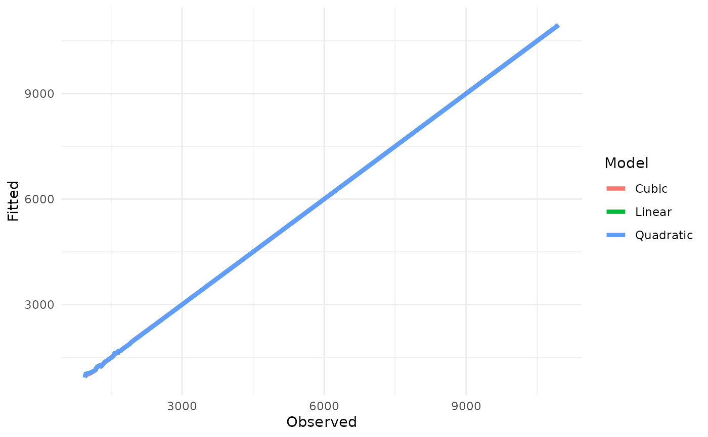
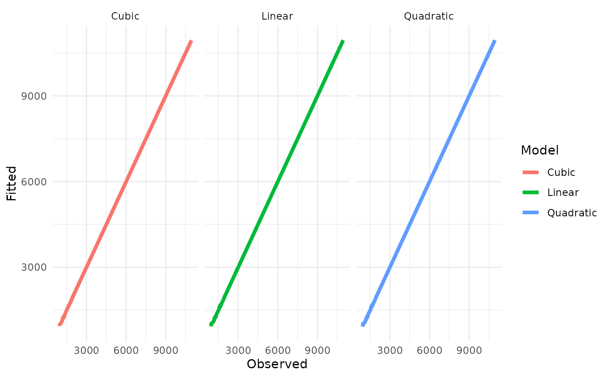
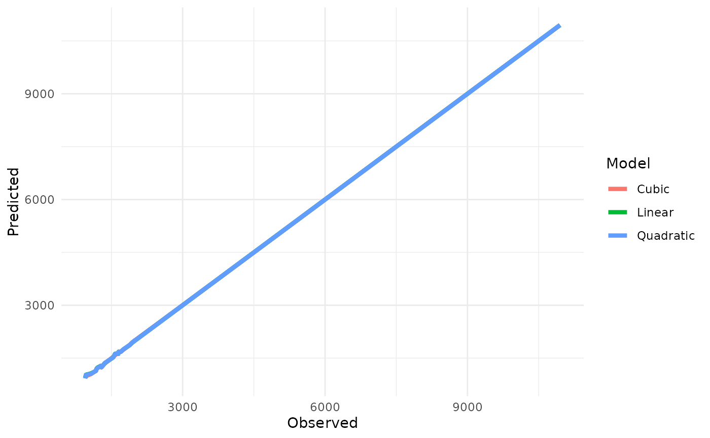
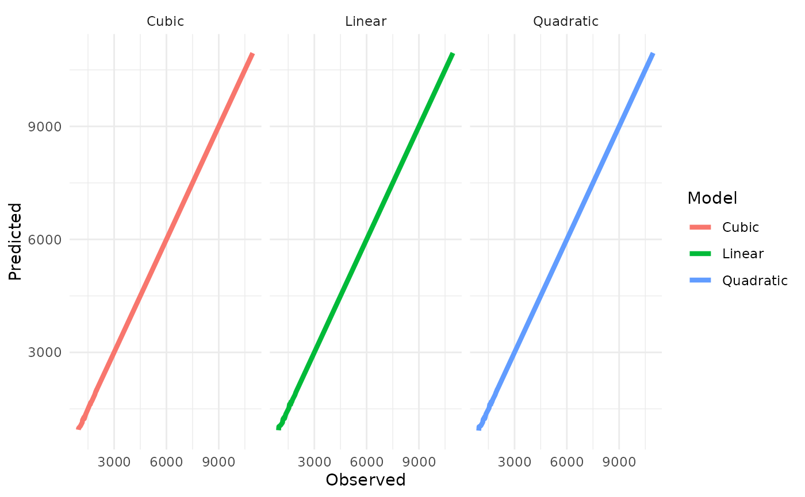
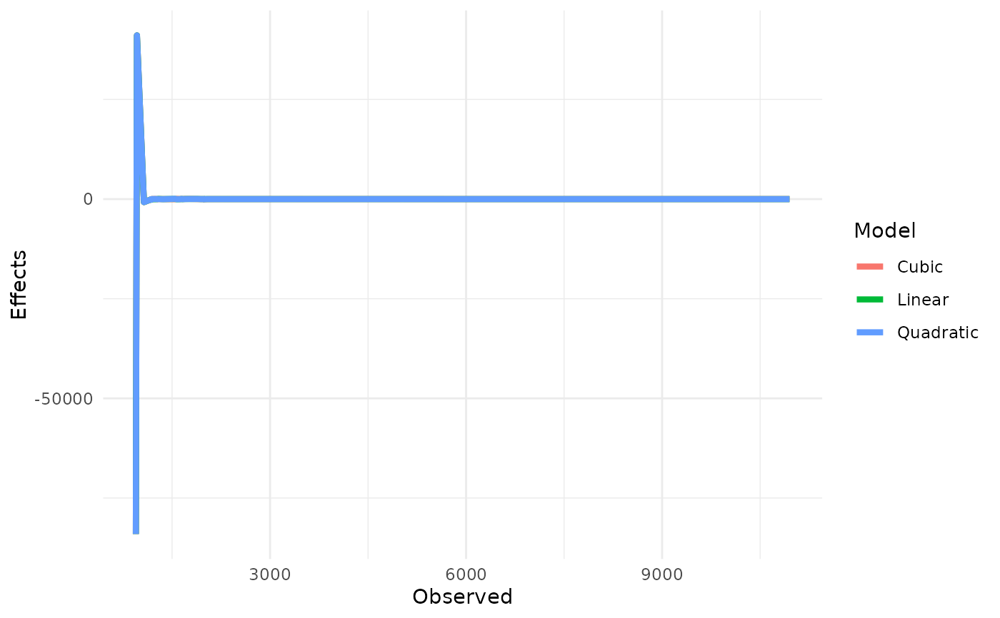
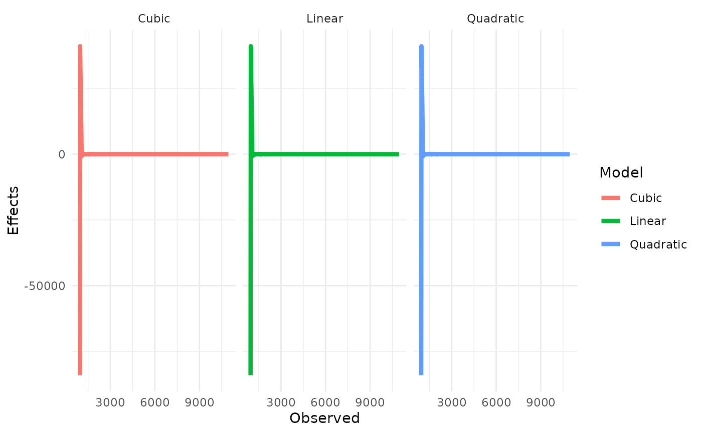

The linear model still remains a reference point towards advanced modeling of some datasets as foundation for Machine Learning, Data Science and Artificial Intelligence in spite of some of her weaknesses. The major task in modeling is to compare various models before a selection is made for one or for advanced modeling. Often, some trial and error methods are used to decide which model to select. This is where this function is unique. It helps to estimate 14 different linear models and provide their coefficients in a formatted Table for quick comparison so that time and energy are saved. The interesting thing about this function is the simplicity, and it is a one line code.
Arguments
- y
Vector of the dependent variable. This must be numeric.
- x
Data frame of the explanatory variables.
- mod
The group of linear models to be estimated. It takes value from 0 to 6. 0 = EDA (correlation, summary tables, Visuals means); 1 = Linear systems, 2 = power models, 3 = polynomial models, 4 = root models, 5 = inverse models, 6 = all the 14 models
- limit
Number of variables to be included in the coefficients plots
- Test
test data to be used to predict y. If not supplied, the fitted y is used hence may be identical with the fitted value. It is important to be cautious if the data is to be divided between train and test subsets in order to train and test the model. If the sample size is not sufficient to have enough data for the test, errors are thrown up.
Value
A list with the following components:
Visual means of the numeric variablePlot of the means of the numeric variables.
Correlation plotPlot of the Correlation Matrix of the numeric variables. To recover the plot, please use this canonical form object$
Correlation plot$plot().LinearThe full estimates of the Linear Model.
Linear with interactionThe full estimates of the Linear Model with full interaction among the numeric variables.
SemilogThe full estimates of the Semilog Model. Here the independent variable(s) is/are log-transformed.
GrowthThe full estimates of the Growth Model. Here the dependent variable is log-transformed.
Double LogThe full estimates of the double-log Model. Here the both the dependent and independent variables are log-transformed.
Mixed-power modelThe full estimates of the Mixed-power Model. This is a combination of linear and double log models. It has significant gains over the two models separately.
Translog modelThe full estimates of the double-log Model with full interaction of the numeric variables.
QuadraticThe full estimates of the Quadratic Model. Here the square of numeric independent variable(s) is/are included as independent variables.
Cubic modelThe full estimates of the Cubic Model. Here the third-power (x^3) of numeric independent variable(s) is/are included as independent variables.
Inverse yThe full estimates of the Inverse Model. Here the dependent variable is inverse-transformed (1 / y).
Inverse xThe full estimates of the Inverse Model. Here the independent variable is inverse-transformed (1 / x).
Inverse y & xThe full estimates of the Inverse Model. Here the dependent and independent variables are inverse-transformed 1 / y & 1 / x).
Square rootThe full estimates of the Square root Model. Here the independent variable is square root-transformed (x^0.5).
Cubic rootThe full estimates of the cubic root Model. Here the independent variable is cubic root-transformed (x^1 / 3).
Significant plot of LinearPlots of order of importance and significance of estimates coefficients of the model.
Significant plot of Linear with interactionPlots of order of importance and significance of estimates coefficients of the model.
Significant plot of SemilogPlots of order of importance and significance of estimates coefficients of the model.
Significant plot of GrowthPlots of order of importance and significance of estimates coefficients of the model.
Significant plot of Double LogPlots of order of importance and significance of estimates coefficients of the model.
Significant plot of Mixed-power modelPlots of order of importance and significance of estimates coefficients of the model.
Significant plot of Translog modelPlots of order of importance and significance of estimates coefficients of the model.
Significant plot of QuadraticPlots of order of importance and significance of estimates coefficients of the model.
Significant plot of Cubic modelPlots of order of importance and significance of estimates coefficients of the model.
Significant plot of Inverse yPlots of order of importance and significance of estimates coefficients of the model.
Significant plot of Inverse xPlots of order of importance and significance of estimates coefficients of the model.
Significant plot of Inverse y & xPlots of order of importance and significance of estimates coefficients of the model.
Significant plot of Square rootPlots of order of importance and significance of estimates coefficients of the model.
Significant plot of Cubic rootPlots of order of importance and significance of estimates coefficients of the model.
Model TableFormatted Tables of the coefficient estimates of all the models
Machine Learning MetricsMetrics (47) for assessing model performance and metrics for diagnostic analysis of the error in estimation.
Table of Marginal effectsTables of marginal effects of each model. Because of computational limitations, if you choose to estimate all the 14 models, the Tables are produced separately for the major transformations. They can easily be compiled into one.
Fitted plots long formatPlots of the fitted estimates from each of the model.
Fitted plots wide formatPlots of the fitted estimates from each of the model.
Prediction plots long formatPlots of the predicted estimates from each of the model.
Prediction plots wide formatPlots of the predicted estimates from each of the model.
Naive effects plots long formatPlots of the
lmeffects. May be identical with plots of marginal effects if performed.Naive effects plots wide formatPlots of the
lmeffects. May be identical with plots of marginal effects if performed.Summary of numeric variablesof the dataset.
Summary of character variablesof the dataset.
Examples
library(tidyverse)
#> ── Attaching core tidyverse packages ──────────────────────── tidyverse 2.0.0 ──
#> ✔ dplyr 1.2.1 ✔ purrr 1.2.2
#> ✔ forcats 1.0.1 ✔ stringr 1.6.0
#> ✔ ggplot2 4.0.3 ✔ tibble 3.3.1
#> ✔ lubridate 1.9.5 ✔ tidyr 1.3.2
#> ── Conflicts ────────────────────────────────────────── tidyverse_conflicts() ──
#> ✖ dplyr::filter() masks stats::filter()
#> ✖ dplyr::lag() masks stats::lag()
#> ℹ Use the conflicted package (<http://conflicted.r-lib.org/>) to force all conflicts to become errors
library(ggtext)
y <- linearsystems$MKTcost
x <- select(linearsystems, -MKTcost)
x <- sampling[, -1]
y <- sampling$qOutput
limit <- 20
mod <-3
Test <- NA
Linearsystems(y, x, 3, 15)
#> Warning: NaNs produced
#> Warning: actual should be a list of vectors. Converting to a list.
#> Warning: predicted should be a list of vectors. Converting to a list.
#> Warning: Ignoring unknown parameters: `label.size`
#> Warning: NaNs produced
#> Warning: actual should be a list of vectors. Converting to a list.
#> Warning: predicted should be a list of vectors. Converting to a list.
#> Warning: NaNs produced
#> Warning: actual should be a list of vectors. Converting to a list.
#> Warning: predicted should be a list of vectors. Converting to a list.
#> $`Visual means of the numeric variable`

#>
#> $`Correlation plot`
#> $`Correlation plot`$plot
#> function ()
#> {
#> corrplot::corrplot.mixed(r, bg = "forestgreen", lower.col = "black",
#> tl.pos = "lt", tl.col = "darkgreen")
#> }
#> <bytecode: 0x55e6b1c3a8e8>
#> <environment: 0x55e6b1c3e2f0>
#>
#>
#> $`Summary of numeric variables`
#> $`Summary of numeric variables`$Summary
#> y qLabor land qVarInput time
#> Mean 5.9e+03 2.7000 9.7e+01 1.5e+03 1.0e+02
#> SD 2.9e+03 0.7400 4.4e+01 5.1e+02 5.8e+01
#> SE.Mean 2.1e+02 0.0530 3.1e+00 3.6e+01 4.1e+00
#> Min 9.5e+02 1.4000 2.3e+01 5.6e+02 1.0e+00
#> Q1 3.4e+03 2.1000 6.0e+01 1.0e+03 5.1e+01
#> Median 5.9e+03 2.7000 9.7e+01 1.5e+03 1.0e+02
#> Q3 8.4e+03 3.3000 1.4e+02 1.9e+03 1.5e+02
#> Max 1.1e+04 4.0000 1.7e+02 2.4e+03 2.0e+02
#> IQR 5.0e+03 1.3000 7.6e+01 8.8e+02 1.0e+02
#> Skewness -2.2e-04 -0.0021 -4.8e-04 -2.8e-03 7.0e-20
#> Kurtosis -1.2e+00 -1.2000 -1.2e+00 -1.2e+00 -1.2e+00
#> Nobs 2.0e+02 200.0000 2.0e+02 2.0e+02 2.0e+02
#>
#> $`Summary of numeric variables`$Means
#> y qLabor land qVarInput time
#> Arithmetic 5900 2.7 97 1500 100
#> Geometric 5100 2.6 86 1400 75
#> Quadratic 6600 2.8 110 1600 120
#> Harmonic 4000 2.5 73 1300 34
#> Cubic 1 1.0 1 1 1
#> Nobs 200 200.0 200 200 200
#>
#>
#> $`Summary of character variables`
#> < table of extent 0 x 0 >
#>
#> $Linear
#>
#> Call:
#> lm(formula = y ~ ., data = Data)
#>
#> Coefficients:
#> (Intercept) qLabor land qVarInput time
#> -97.669 -185.953 29.342 1.061 21.027
#>
#>
#> $`Significant plot of Linear`

#>
#> $Quadratic
#>
#> Call:
#> lm(formula = y ~ ., data = Data)
#>
#> Coefficients:
#> (Intercept) qLabor land qVarInput time IqLabor
#> -3.739e+03 4.321e+03 1.649e+01 1.773e+00 1.675e+01 -1.403e+03
#> Iland IqVarInput Itime
#> 1.717e-01 -4.370e-04 1.668e-01
#>
#>
#> $`Significant plot of Quadratic`

#>
#> $`Cubic model`
#>
#> Call:
#> lm(formula = y ~ ., data = Data)
#>
#> Coefficients:
#> (Intercept) qLabor land qVarInput time IqLabor
#> 2.157e+05 -3.800e+05 -4.967e+02 -7.143e+01 9.152e+01 2.474e+05
#> Iland IqVarInput Itime ICqLabor ICland ICqVarInput
#> 1.638e+01 1.045e-01 -7.836e+00 -5.352e+04 -1.688e-01 -4.974e-05
#> ICtime
#> 2.222e-01
#>
#>
#> $`Significant plot of Cubic model`

#>
#> $`Model Table`
#>
#> +-------------+-------------+-------------+----------------+
#> | | Linear | Quadratic | Cubic |
#> +=============+=============+=============+================+
#> | (Intercept) | -97.669 | -3738.757** | 215732.583*** |
#> +-------------+-------------+-------------+----------------+
#> | | (63.634) | (1371.334) | (33257.565) |
#> +-------------+-------------+-------------+----------------+
#> | qLabor | -185.953** | 4321.492* | -379999.844*** |
#> +-------------+-------------+-------------+----------------+
#> | | (60.197) | (1845.469) | (64802.196) |
#> +-------------+-------------+-------------+----------------+
#> | land | 29.342*** | 16.493* | -496.674*** |
#> +-------------+-------------+-------------+----------------+
#> | | (1.274) | (8.104) | (78.169) |
#> +-------------+-------------+-------------+----------------+
#> | qVarInput | 1.061*** | 1.773* | -71.426*** |
#> +-------------+-------------+-------------+----------------+
#> | | (0.077) | (0.848) | (8.462) |
#> +-------------+-------------+-------------+----------------+
#> | time | 21.027*** | 16.753*** | 91.522*** |
#> +-------------+-------------+-------------+----------------+
#> | | (1.060) | (2.973) | (7.725) |
#> +-------------+-------------+-------------+----------------+
#> | IqLabor | | -1403.465* | 247353.561*** |
#> +-------------+-------------+-------------+----------------+
#> | | | (589.317) | (41708.879) |
#> +-------------+-------------+-------------+----------------+
#> | Iland | | 0.172 | 16.376*** |
#> +-------------+-------------+-------------+----------------+
#> | | | (0.136) | (2.563) |
#> +-------------+-------------+-------------+----------------+
#> | IqVarInput | | -0.000 | 0.104*** |
#> +-------------+-------------+-------------+----------------+
#> | | | (0.001) | (0.012) |
#> +-------------+-------------+-------------+----------------+
#> | Itime | | 0.167 | -7.836*** |
#> +-------------+-------------+-------------+----------------+
#> | | | (0.125) | (0.790) |
#> +-------------+-------------+-------------+----------------+
#> | ICqLabor | | | -53516.656*** |
#> +-------------+-------------+-------------+----------------+
#> | | | | (8926.119) |
#> +-------------+-------------+-------------+----------------+
#> | ICland | | | -0.169*** |
#> +-------------+-------------+-------------+----------------+
#> | | | | (0.027) |
#> +-------------+-------------+-------------+----------------+
#> | ICqVarInput | | | -0.000*** |
#> +-------------+-------------+-------------+----------------+
#> | | | | (0.000) |
#> +-------------+-------------+-------------+----------------+
#> | ICtime | | | 0.222*** |
#> +-------------+-------------+-------------+----------------+
#> | | | | (0.022) |
#> +-------------+-------------+-------------+----------------+
#> | Num.Obs. | 200 | 200 | 200 |
#> +-------------+-------------+-------------+----------------+
#> | R2 | 1.000 | 1.000 | 1.000 |
#> +-------------+-------------+-------------+----------------+
#> | R2 Adj. | 1.000 | 1.000 | 1.000 |
#> +-------------+-------------+-------------+----------------+
#> | AIC | 1438.0 | 1434.0 | 1328.3 |
#> +-------------+-------------+-------------+----------------+
#> | BIC | 1457.8 | 1467.0 | 1374.5 |
#> +-------------+-------------+-------------+----------------+
#> | Log.Lik. | -713.010 | -706.986 | -650.160 |
#> +-------------+-------------+-------------+----------------+
#> | F | 5627190.152 | | |
#> +-------------+-------------+-------------+----------------+
#> | RMSE | 8.55 | 8.30 | 6.25 |
#> +=============+=============+=============+================+
#> | + p < 0.1, * p < 0.05, ** p < 0.01, *** p < 0.001 |
#> +=============+=============+=============+================+
#>
#> $`Machine Learning Metrics`
#> Name Linear Quadratic Cubic
#> 1 Absolute Error 420 510 620
#> 2 Absolute Percent Error 0.32 0.35 0.31
#> 3 Accuracy 0 0 0
#> 4 Adjusted R Square 1 1 1
#> 5 Akaike's Information Criterion AIC 1400 1400 1300
#> 6 Area under the ROC curve (AUC) 0 0 0
#> 7 Average Precision at k 0 0 0
#> 8 Bias 2.6e-14 -2.7e-14 1.2e-14
#> 9 Brier score 70 70 40
#> 10 Classification Error 1 1 1
#> 11 F1 Score 0 0 0
#> 12 fScore 0 0 0
#> 13 GINI Coefficient 1 1 1
#> 14 kappa statistic 0 0 0
#> 15 Log Loss Inf Inf Inf
#> 16 Mallow's cp 5 9 13
#> 17 Matthews Correlation Coefficient 0 0 0
#> 18 Mean Log Loss -210000 -210000 -210000
#> 19 Mean Absolute Error 2.1 2.6 3.1
#> 20 Mean Absolute Percent Error 0.0016 0.0017 0.0015
#> 21 Mean Average Precision at k 0 0 0
#> 22 Mean Absolute Scaled Error 0.04 0.049 0.06
#> 23 Median Absolute Error 3.8e-07 0.49 1.7
#> 24 Mean Squared Error 73 69 39
#> 25 Mean Squared Log Error 5e-05 4.7e-05 2.3e-05
#> 26 Model turning point error 2 2 2
#> 27 Negative Predictive Value 0 0 0
#> 28 Percent Bias -5.4e-05 1.9e-05 4.2e-05
#> 29 Positive Predictive Value 0 0 0
#> 30 Precision 0 0 0
#> 31 Predictive Residual Sum of Squares 0 0 0
#> 32 R Square 1 1 1
#> 33 Relative Absolute Error 0.00083 0.001 0.0012
#> 34 Recall NaN NaN NaN
#> 35 Root Mean Squared Error 8.6 8.3 6.2
#> 36 Root Mean Squared Log Error 0.007 0.0069 0.0048
#> 37 Root Relative Squared Error 0.0029 0.0029 0.0021
#> 38 Relative Squared Error 8.7e-06 8.2e-06 4.6e-06
#> 39 Schwarz's Bayesian criterion BIC 1500 1500 1400
#> 40 Sensitivity 0 0 0
#> 41 specificity 0 0 0
#> 42 Squared Error 15000 14000 7800
#> 43 Squared Log Error 0.0099 0.0095 0.0046
#> 44 Symmetric Mean Absolute Percentage Error 0.0016 0.0017 0.0016
#> 45 Sum of Squared Errors 15000 14000 7800
#> 46 True negative rate 0 0 0
#> 47 True positive rate 0 0 0
#>
#> $`Tables of marginal effects`
#>
#> +-------------------+-------------+------------+----------------+
#> | | Linear | Quadratic | Cubic |
#> +===================+=============+============+================+
#> | land dY/dX | 29.342*** | 16.493* | -496.674*** |
#> +-------------------+-------------+------------+----------------+
#> | | (1.274) | (8.104) | (78.160) |
#> +-------------------+-------------+------------+----------------+
#> | qLabor dY/dX | -185.953** | 4321.492* | -379999.844*** |
#> +-------------------+-------------+------------+----------------+
#> | | (60.199) | (1845.464) | (64803.121) |
#> +-------------------+-------------+------------+----------------+
#> | qVarInput dY/dX | 1.061*** | 1.773* | -71.426*** |
#> +-------------------+-------------+------------+----------------+
#> | | (0.077) | (0.848) | (8.461) |
#> +-------------------+-------------+------------+----------------+
#> | time dY/dX | 21.027*** | 16.753*** | 91.522*** |
#> +-------------------+-------------+------------+----------------+
#> | | (1.060) | (2.973) | (7.724) |
#> +-------------------+-------------+------------+----------------+
#> | Iland dY/dX | | 0.172 | 16.376*** |
#> +-------------------+-------------+------------+----------------+
#> | | | (0.136) | (2.563) |
#> +-------------------+-------------+------------+----------------+
#> | IqLabor dY/dX | | -1403.465* | 247353.561*** |
#> +-------------------+-------------+------------+----------------+
#> | | | (589.318) | (41708.985) |
#> +-------------------+-------------+------------+----------------+
#> | IqVarInput dY/dX | | -0.000 | 0.104*** |
#> +-------------------+-------------+------------+----------------+
#> | | | (0.001) | (0.012) |
#> +-------------------+-------------+------------+----------------+
#> | Itime dY/dX | | 0.167 | -7.836*** |
#> +-------------------+-------------+------------+----------------+
#> | | | (0.125) | (0.790) |
#> +-------------------+-------------+------------+----------------+
#> | ICland dY/dX | | | -0.169*** |
#> +-------------------+-------------+------------+----------------+
#> | | | | (0.027) |
#> +-------------------+-------------+------------+----------------+
#> | ICqLabor dY/dX | | | -53516.656*** |
#> +-------------------+-------------+------------+----------------+
#> | | | | (8926.097) |
#> +-------------------+-------------+------------+----------------+
#> | ICqVarInput dY/dX | | | -0.000*** |
#> +-------------------+-------------+------------+----------------+
#> | | | | (0.000) |
#> +-------------------+-------------+------------+----------------+
#> | ICtime dY/dX | | | 0.222*** |
#> +-------------------+-------------+------------+----------------+
#> | | | | (0.022) |
#> +-------------------+-------------+------------+----------------+
#> | Num.Obs. | 200 | 200 | 200 |
#> +-------------------+-------------+------------+----------------+
#> | R2 | 1.000 | 1.000 | 1.000 |
#> +-------------------+-------------+------------+----------------+
#> | R2 Adj. | 1.000 | 1.000 | 1.000 |
#> +-------------------+-------------+------------+----------------+
#> | AIC | 1438.0 | 1434.0 | 1328.3 |
#> +-------------------+-------------+------------+----------------+
#> | BIC | 1457.8 | 1467.0 | 1374.5 |
#> +-------------------+-------------+------------+----------------+
#> | Log.Lik. | -713.010 | -706.986 | -650.160 |
#> +-------------------+-------------+------------+----------------+
#> | F | 5627190.152 | | |
#> +-------------------+-------------+------------+----------------+
#> | RMSE | 8.55 | 8.30 | 6.25 |
#> +===================+=============+============+================+
#> | + p < 0.1, * p < 0.05, ** p < 0.01, *** p < 0.001 |
#> +===================+=============+============+================+
#>
#> $`Fitted plots long format`

#>
#> $`Fitted plots wide format`

#>
#> $`Prediction plots long format`

#>
#> $`Prediction plots wide format`

#>
#> $`Naive effects plots long format`

#>
#> $`Naive effects plots wide format`

#>